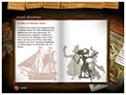
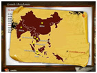
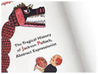
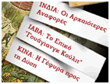

Μια νέα πλήρης ιστοσελίδα για το Θέατρο Σκιών στο Διαδίκτυο




Υποψήφια στην Τελική Λίστα για το Βραβείο Εrmis
«Καλύτερης Ιστοσελίδας για Εκπαιδευτική Χρήση»
H πρωτότυπη διαδραστική παρουσίαση του θεάτρου σκιών στην ιστοσελίδα της συγγραφέως Ντορίνας Παπαλιού (www.greekshadows.gr), προβάλλει με ζωντάνια το συναρπαστικό ταξίδι του θεάτρου σκιών μέσα στο χώρο και στο χρόνο, από την Ανατολή στη Δύση και από το παρελθόν στο παρόν. Μέσα από κείμενα, εντυπωσιακό φωτογραφικό υλικό και σύντομα βίντεο, η ιστοσελίδα χτίζει μια συνολική εικόνα του θεάτρου σκιών με κύρια έμφαση στους δημιουργούς και τις παραστάσεις του ελληνικού Καραγκιόζη, από τη γέννησή του μέχρι σήμερα. Το πλούσιο υλικό, που περιλαμβάνει ανέκδοτες μέχρι σήμερα συλλογές από φιγούρες, σε συνδυασμό με τον εξαιρετικά σύγχρονο και ζωντανό γραφιστικό σχεδιασμό, προσφέρει μια καινούργια εμπειρία στη μελέτη του θεάτρου σκιών. Απευθύνεται σε όλες τις ηλικίες. Εξαιρετικά χρήσιμο ως διδακτικό υλικό για τους μαθητές των σχολείων.
Περισσότερες πληροφορίες για τη συγγραφέα θα βρείτε στην ιστοσελίδα:
dorinapapaliou.com